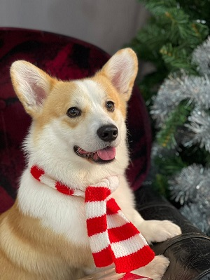
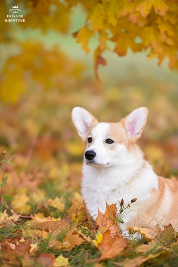

This is Dons and he is a male Pembroke Welsh Corgi breed dog. This 3 year old pup is from Russia and has travelled a long way to meet me. Although we have been together only for a little time, I couldn't imagine my life without him.
About Dons
Dons is real name is Mysticor Before the Storm. That is the name that was given by his breeder. He actually is a show dog and is a Baltic state champion.
Dons titles are:
- LVJCH
- ESTJCH
- LTJCH
- BALTJCH
- LVCH
- ESTCH
- LTCH
- POLCH
- HUNGCH
- SLOVCH
- BALTCH
But other that that Dons' favourite activities are sleeping, cuddling, laying by the fire place, running, agility training, playing with dog toys, riding in a car and walking outside. He is a very happy and smart dog who sometimes forgets his quite big size and weight.
Follow Dons on Instagram @don_corgi_latvia
About the name
Dons name has several meanings:
- The Latvian singer Dons
- Don Kihot
- Italian mafia don
It is interesting what is the first thing that comes in mind for others when they hear my dogs name. Mostly they think of the Latvian singer Dons as the reason I called him that way. But this name actually came to me because that is my mom's favourite singer and my dad is a big Don Kihot fan. So I knew that this will be the right name for my little pup.
About the breed
We all know that corgies are cute and cuddly and probably the first thing that comes to mind is Queen Elizabeth's gratious corgies. But actually they are not just that.
Pembroke Welsh Corgies are strong, athletic, and lively little herders who are affectionate and companionable without being needy. They are great house dogs but also demand a lot of exercise in order to keep them in shape. Corgis also respond great to training and enjoy playing with their family and other dogs.
Pembroke Welsh Corgies have quite the origin that can trace back to 1107 AD. Henry I of England is the one we have to thank for the Pembroke Welsh Corgi dog we know today. The biggest corgi fan in the world of course was none other than Queen Elizabeth II, who got her first corgi, Dookie, in 1933 and has had a lot of them since then.
This strong, athletic little dog was breeded to be a herder so it needs a lot of exercise. Pembroke Corgi feels the best when he has something to do. They do well on walks, slow runs but won't be able to keep up with a bicycle rider because of their little legs.
Back to top